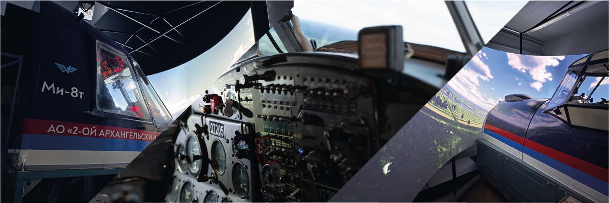

📖 出发前必读：《俄罗斯境内旅行与飞行指南 ver.2026》
安东诺夫 Ан-2（An-2）
- 安-2（北约代号：Colt，意为”小马”），是世界上最著名的单发双翼多用途运输机之一，自1947年首飞至今仍在广袤的俄罗斯大地上服役。
- 拥有极为逆天的超短距起降能力（在强逆风下甚至能在空中”相对悬停”或”倒飞”），常年用于没有铺装跑道的林区、雪原等偏远村落的日常通勤。
- 飞行速度非常慢（巡航速度在190km/h左右），且客舱没有增压和隔音设备。乘坐体验基本等同于”坐在拖拉机里飞上天”，极其硬核但也是最纯粹的低空飞行体验。
第二阿尔汉格尔斯克股份公司（2nd Arkhangelsk United Aviation Division）

购票平台：线下机场售票处，航司官网
这是俄罗斯目前为数不多依然把安-2保留在定期客运航班网络中的航司。大本营在阿尔汉格尔斯克（瓦西科沃机场 Vaskovo），这家航司专注于白海沿岸及苔原深处的地区级交通。当地很多与外界隔离的小村落至今仍依赖这种”空中公交车”来维持生存补给。想要体验最原生态的安-2客运，来这里是绝佳的选择。
| 乘坐体验 | 排班密度 | 性价比 | 稳定程度 |
|---|---|---|---|
| 🌟 | 🌟🌟🌟 | 🌟🌟🌟🌟 | 🌟🌟🌟 |

An-2活跃的地区：
- 阿尔汉格尔斯克（瓦西科沃机场 / Vaskovo）辐射至白海沿岸及周边的各个偏僻定居点，例如：洛普申加 (Лопшеньга) 、雷特尼亚亚·佐洛季察 (Летняя Золотица) 等。
航班及时刻表可以在其航司官网相关页面进行查询：https://2aoao.ru/schedule.php
补充说明： 极地航空（Polar Airlines）虽然机队中同样保有数量可观的An-2/An-3并在雅库特地区深处穿梭，但他们家的An-2目前没有定期客运航班，主要仅用于货运、医疗救护或内部包机。普通游客很难有机会购买到极地航空的An-2机票。